unselect all
unselect all

Sort By
NAME

About
The MediaLAB Amsterdam Design Method Toolkit enables you to get started and enrich your design process. A collection of design and research methods: categorised to help you select, time based to help you plan. Plan and execute your design research, ideation, experimentation and creation within short iterations.
Agile based

Detailed task-based descriptions help teams divide and assign tasks between team members. This makes the Design Method Toolkit perfect for lean, agile environments and multidisciplinary teams.
Use the Design Method Toolkit in combination with the DMT Plan Board, your Scrum Board and experience it’s full potential!
Select Execute
Research Create
In an ideal design process there is a constant flow between researching and creating. That is why these cards are divided into two types, Research and Create.
Research focuses on gathering information and making sense of it.
The results of the research methods will give you insights that will supply new design criteria.
Create focuses on having a tangible object (report, visualization, prototype, etc) that you can show.
The output of the create methods may propose new research material.
Know User
Explore the background of the project, the context, the situation, location, time and social/technical context.Get to know the people involved, their wants, goals, needs and feelings.
Define Intentions
Define your challenge’s vision, objectives, scenarios, scopes and constraints.Ask yourself questions that relate to the why, what and who of your challenge and sense what trends, opportunities and possible constraints might affect it in the process.
Frame insights
Draw conclusions from your research and make lessons learned explicit. Try to narrow down the information.Can you extract the most valuable and important elements from your insights? What impact will these insights have on your design?
Ideation & concepts
Define your challenge’s vision, objectives, scenarios, scopes and constraints.Ask yourself questions that relate to the why, what and who of your challenge and sense what trends, opportunities and possible constraints might affect it in the process.
Prototype & Test
Ways to get from concepts to production, prototyping and testing.Are your ideas valid? Can you create working prototypes from your concepts? How can you test your prototypes with users? How do you get the best and most realistic test results?
About
The MediaLAB Amsterdam Design Method Toolkit enables you to get started and enrich your design process. A collection of design and research methods: categorised to help you select, time based to help you plan. Plan and execute your design research, ideation, experimentation and creation within short iterations.
Agile based
Detailed task-based descriptions help teams divide and assign tasks between team members. This makes the Design Method Toolkit perfect for lean, agile environments and multidisciplinary teams.Use the Design Method Toolkit in combination with the DMT Plan Board, your Scrum Board and experience it’s full potential!
Select
Execute
In an ideal design process there is a constant flow between researching and creating. That is why these cards are divided into two types, Research and Create.
Research
Research focuses on gathering information and making sense of it.
The results of the research methods will give you insights that will supply new design criteria.
Create focuses on having a tangible object (report, visualization, prototype, etc) that you can show.
The output of the create methods may propose new research material.
Create
Know User
Explore the background of the project, the context, the situation, location, time and social/technical context.Get to know the people involved, their wants, goals, needs and feelings.
Define Intentions
Define your challenge’s vision, objectives, scenarios, scopes and constraints.Ask yourself questions that relate to the why, what and who of your challenge and sense what trends, opportunities and possible constraints might affect it in the process.
Frame insights
Draw conclusions from your research and make lessons learned explicit. Try to narrow down the information.Can you extract the most valuable and important elements from your insights? What impact will these insights have on your design?
Ideation & concepts
Define your challenge’s vision, objectives, scenarios, scopes and constraints.Ask yourself questions that relate to the why, what and who of your challenge and sense what trends, opportunities and possible constraints might affect it in the process.
Prototype & Test
Ways to get from concepts to production, prototyping and testing.Are your ideas valid? Can you create working prototypes from your concepts? How can you test your prototypes with users? How do you get the best and most realistic test results?